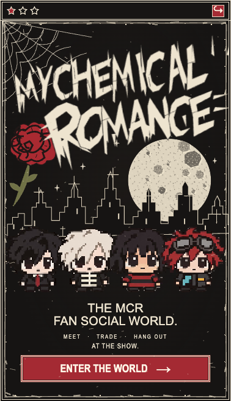
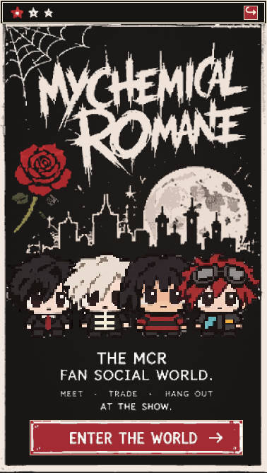

The target is a CSS viewport onto the original ten-screen image, cropping panel bounds (6,4,296,524) and uniformly scaling that panel to 300px. Both browser captures are uniformly scaled to the same 300px width. The prior page is delivered b80956ea, unchanged at assignment base 903773b8. The delivered page transcribes only isolated non-character foreground contours; approved character art remains unchanged.


Auth, readiness and legal navigation retain real semantics. The glyph/ornament/copy/frame contours are transcribed into foreground vector paths. Authoritative selected costumes and truthful Sign in/readiness/legal controls remain distinct from the target. No target characters or whole-screen raster is used. These are not live provider, real device, multiuser or all-ten-route acceptance captures.